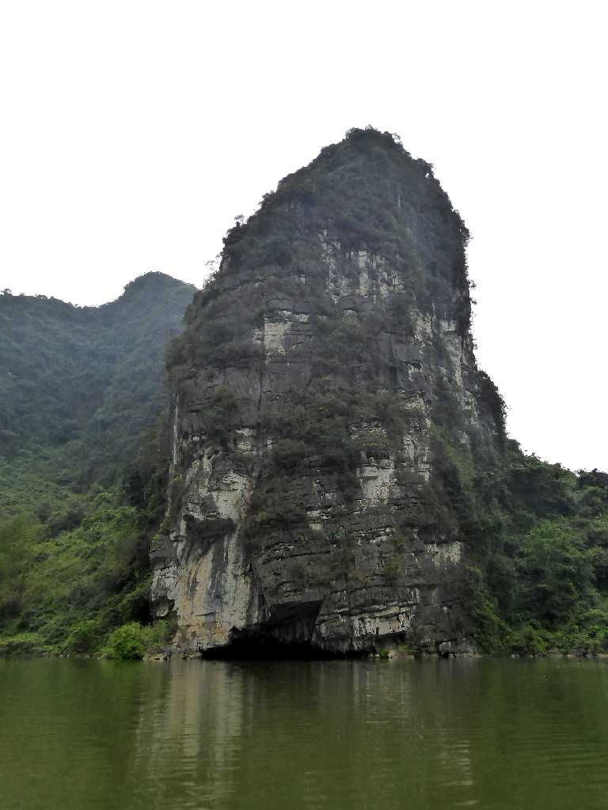
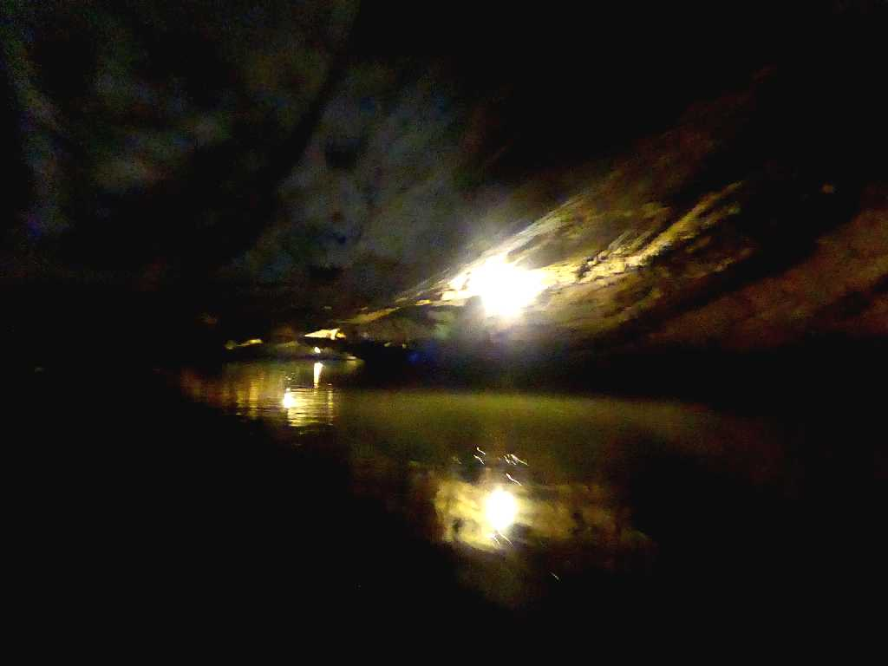
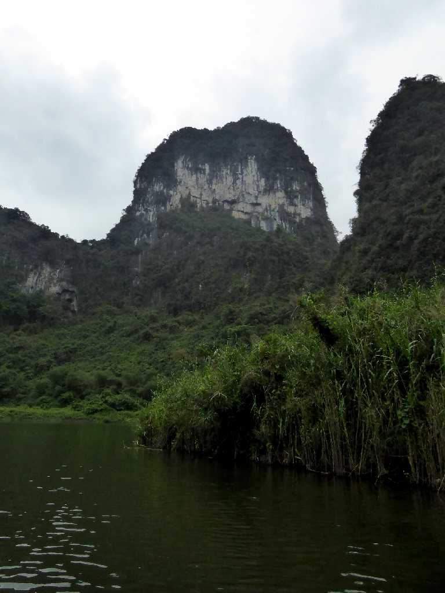
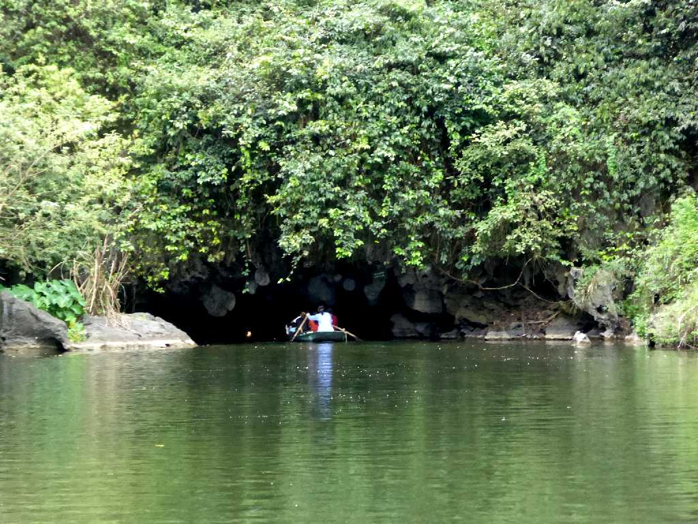
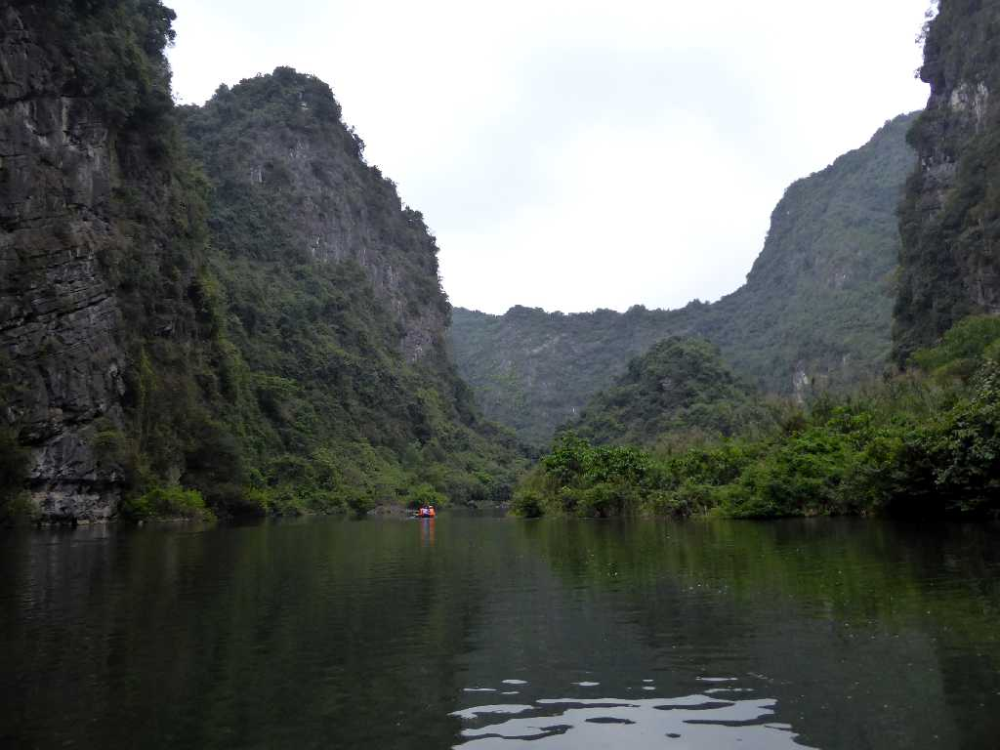
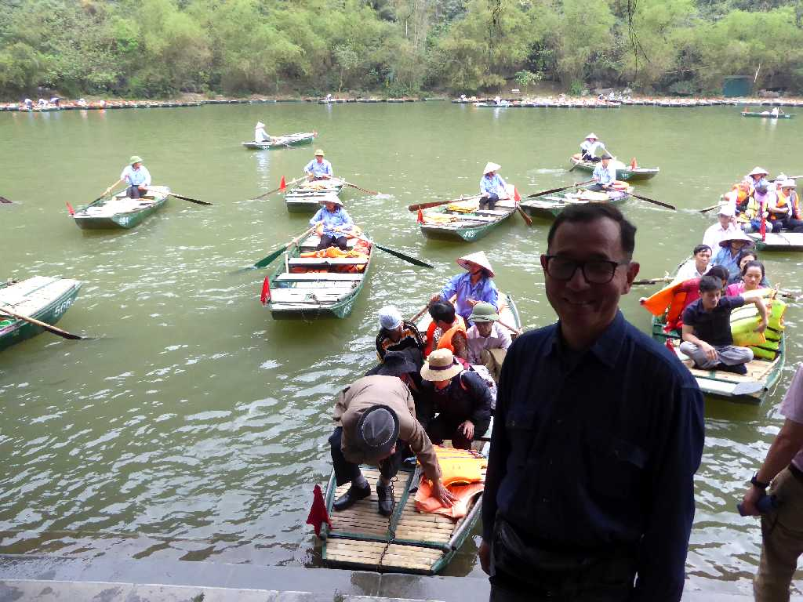

Tràng An Ninh Binh
陸のハロン湾と云われるチャンアンのカルスト地形と洞窟群

CaveTràng An
４人乗りポートでの狭い８ヶ所の洞窟を通り抜ける２時間のクルーズを楽しむ

Karst Tràng An
２億年前にできた世界で最も若いカルスト地形と云われる

Entrance Cave Tràng An

Landscape Tràng An

March 26 2018 Tràng An